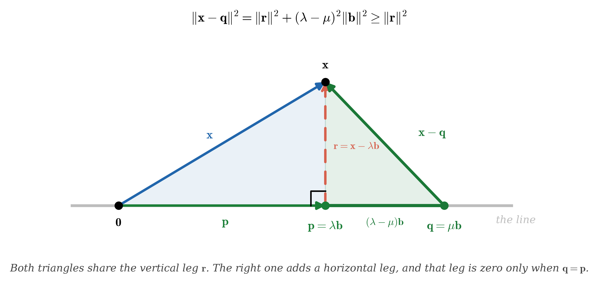

Mathematical Foundations for Data Science and AI
Unit 2 — Learning Means Reducing Error
Jie Zhong
Department of Mathematics
California State University, Los Angeles
Unit map
A model has only a handful of numbers to tune. Every data point makes a demand on them: "for this input, produce that output."
Real data always makes more demands than the model has numbers. So no setting satisfies every point — some error is unavoidable.
- L03: projection — the geometry behind "closest."
- L04: linear regression, MSE, the normal equation.
- L05: linear systems, column space — when does an exact answer exist?
- L06: pseudoinverse, stability — what to do when formulas break.

What this unit should answer
| Question | Math idea | Lecture |
|---|---|---|
| What is "best fit" when exact solutions fail? | least squares, projection | L03 |
| How does regression find the best line? | MSE, normal equation | L04 |
| When can a linear system be solved exactly? | column space, rank | L05 |
| What if the exact formula is unstable? | pseudoinverse, conditioning | L06 |
Five lenses on regression
- Lens 1 (L03–L04): Geometric — regression is a projection.
- Lens 2 (L05–L06): Algebraic — solve the normal equation.
- Lens 3 (L09–L10): Calculus — set the derivative to zero.
- Lens 4 (L15–L16): Optimization — gradient descent.
- Lens 5 (L25): Probabilistic — maximum likelihood.
Unit 2 shows the first two.
L03 — Projection: The Geometry of "Closest"
Three friends guess your age:
| Alice | Bob | Carol |
|---|---|---|
| 19 | 21 | 20 |
- There is one unknown — your age. Call it \(x\). Each guess is a claim about that one number: \(x = 19\), \(x = 21\), \(x = 20\). No single number satisfies all three.
- You cannot be right for everyone. You can only be wrong by as little as possible.
- You'd probably say the average: \(x^* = \frac{19+21+20}{3} = 20\) — the best compromise.
Why the average? Minimizing squared error
We never find out your real age. All we have is the three answers — so "error" here does not mean distance from the truth. It means how far our one answer sits from each friend's.
Pick a candidate \(x\). It misses Alice by \(x-19\), Bob by \(x-21\), Carol by \(x-20\). Square each one, so being 2 too high counts the same as being 2 too low. Then add them up:
| Our answer \(x\) | miss Alice \((x-19)^2\) | miss Bob \((x-21)^2\) | miss Carol \((x-20)^2\) | Total |
|---|---|---|---|---|
| 18 | 1 | 9 | 4 | 14 |
| 19 | 0 | 4 | 1 | 5 |
| 20 | 1 | 1 | 0 | 2 |
| 21 | 4 | 0 | 1 | 5 |
| 22 | 9 | 1 | 4 | 14 |
From the average to least squares
The table showed it for five candidates. Here is the claim in full, for any data at all:
- Our data: \(\bar b = \frac{19+21+20}{3} = 20\), and the leftover is \(1+1+0 = 2\) — exactly the smallest row of the table.
- "Exactly one" is part of the claim: no tie, no second-best answer.
- That leftover \(\sum_i(\bar b - b_i)^2\) is the error no choice of \(x\) can remove. The friends disagree with each other; no single number can fix that.
Why the average wins
You already know how to minimize a function: differentiate, set it to zero.
- Set \(f'(x)=0\): \(\;nx=\sum_i b_i\;\), so \(\;x=\frac{1}{n}\sum_i b_i=\bar b\). The average falls out.
- \(f''(x)=2n>0\) everywhere, so this is a minimum — and it's the only place \(f'\) is zero, so it's the only one.
- Our data: \(f'(x)=2(3x-60)=0 \Rightarrow x=20\).
This is how AI models train

Every AI training loop does the same thing:
- Make a prediction.
- Compare it to the answer recorded in the data.
- Measure the error — square it, then add up over all the data.
- Adjust to make that total smaller.
Step 2 says recorded in the data — not the truth. A model never sees the truth. It only sees what was written down, and that can be noisy, or disagree with itself, exactly like three friends who give you three different ages.
Name the pattern: overdetermined system

The age-guessing problem has a famous twin — the one in your pocket:
A best-fit solution minimizes \(\norm{A\mathbf{x} - \mathbf{b}}\), where \(\norm{\cdot}\) with no subscript is the Euclidean (\(\ell_2\)) norm — the Unit 1 default, and MML's.
- GPS. Each satellite reports only how far away it is — that puts you somewhere on a circle around it. Two circles already cross at a point, so with perfect readings two satellites would be enough, and a third would pass through that same point.
- But every reading carries error, so the three circles bound a small triangle instead of meeting. No point sits on all three. The error causes that — not the extra satellite.
- So why carry a third? Two satellites give an exact answer that is exactly as wrong as your error, with nothing to warn you. Three cannot all be satisfied — and that failure is the information.
- \(m > n\) is not the problem; it is the redundancy that beats the noise. Your phone picks the point that misses all three by the least. AI training is the same trade: millions of examples, thousands of weights (\(m \gg n\)).
Quick check
Up — adding another constraint to satisfy usually increases the total error. More data means more equations to juggle, so the best compromise gets slightly worse per equation.
The real question: closest point

Imagine you're standing on a hill and you want to get to a road below. What's the shortest path to the road?
- Walk straight toward the road — perpendicular.
- Any other path would be longer.
- The point where you hit the road is the closest point.
Deriving the formula: where does the projection land?
The closest point on the line is \(\mathbf{p} = \lambda \mathbf{b}\) for some scalar \(\lambda\). Which \(\lambda\)?
Step 1. The residual must be perpendicular to the line:
\[\mathbf{b}^\top \underbrace{(\mathbf{x} - \lambda \mathbf{b})}_{\text{residual}} = 0\]Step 2. Expand:
\[\mathbf{b}^\top \mathbf{x} - \lambda\,\mathbf{b}^\top \mathbf{b} = 0\]Step 3. Solve for \(\lambda\):
\[\boxed{\lambda = \frac{\mathbf{b}^\top \mathbf{x}}{\mathbf{b}^\top \mathbf{b}}}\]
Projection: a concrete example
Line direction: \(\mathbf{b} = (1,1)\). Point: \(\mathbf{x} = (2,0)\).
Closest point on the line to \((2,0)\) is \((1,1)\).

The residual: what's left over
The residual is the gap between the original point and the projection:
- The residual points from the projection back to the original point.
- Its length \(\norm{\mathbf{r}} = \sqrt{1^2+(-1)^2} = \sqrt{2}\) is the distance from \(\mathbf{x}\) to the line.
Check: \(\mathbf{r} \cdot \mathbf{b} = (1)(1) + (-1)(1) = 0\). ✓ Perpendicular!
Why perpendicular = optimal
Think about it with the Pythagorean theorem:
- The projection and residual form a right triangle.
- If the error had any component along the line, you could slide closer.
- Perpendicular means: nothing left to improve.
Proof: any other point on the line is farther

Let \(\mathbf{p} = \lambda \mathbf{b}\) be the projection and \(\mathbf{q} = \mu \mathbf{b}\) be any other point on the line (\(\mu \neq \lambda\)).
- \(\|\mathbf{r}\|^2\) is the distance to the projection — fixed.
- \((\lambda-\mu)^2\|\mathbf{b}\|^2 > 0\) — moving away from \(\mathbf{p}\) only adds distance.
- Therefore \(\|\mathbf{x} - \mathbf{q}\| > \|\mathbf{x} - \mathbf{p}\|\). The projection is uniquely closest.
Quick check
\(\mathbf{x}\) itself — it's already on the line, so the closest point is itself. The residual is zero.
The projection formula
- We proved the first one; we have not proved the second. It is the same three-step argument — residual ⊥ subspace, expand, solve — with the basis matrix \(B\) in place of the single vector \(\mathbf{b}\). We will do that derivation in L04, where it goes by another name: the normal equation.
- Compare the two shapes: dividing by the number \(\mathbf{b}^\top\mathbf{b}\) becomes multiplying by the matrix inverse \((B^\top B)^{-1}\). Same formula, one dimension up.
- The line formula uses the dot product from Unit 1.
- The subspace formula uses matrix multiplication from Unit 1.
- Three properties: (1) result lies in the subspace, (2) it's unique, (3) residual is perpendicular.
The big connection: least squares = projection
- \(A\mathbf{x}\) lives in the column space of \(A\) — the set of all outputs the system can produce.
- The best-fit \(\mathbf{x}^*\) makes \(A\mathbf{x}^*\) the closest point in that column space to \(\mathbf{b}\).
- The residual \(\mathbf{b} - A\mathbf{x}^*\) is perpendicular to the column space.
Example: fitting a line through data
Three data points \((t_i, y_i)\): \((0, 1)\), \((1, 2)\), \((2, 2)\). The line is \(\hat{y} = w_0 + w_1 t\).
Fitting the line means finding \(w_0\) and \(w_1\). Fix those two numbers and the line is fixed — they are the unknowns.
Substitute each point and you get one equation per point:
Three equations, two unknowns. Now stack the coefficients — row \(i\) holds what multiplies \(w_0\) and \(w_1\) in equation \(i\):
Reading that matrix
- The column of \(1\)s is not extra data. It is \(w_0\)'s coefficient, and it is \(1\) in every equation because \(w_0\) is added to every prediction unchanged.
- The second column is \(w_1\)'s coefficient — the measured \(t_i\).
- \(\mathbf{b}\) is the observed \(y_i\). So \(A\mathbf{w}\) is what the model predicts, \(\mathbf{b}\) is what was observed.
- Drop the \(1\) column and every equation becomes \(w_1 t_i = y_i\): a line forced through the origin.
Fitting a line is a projection
- Careful — \(\mathbf{b}\) has changed jobs. Before, \(\mathbf{b}\) was the direction of the line we projected onto. Here it is the vector being projected.
- The subspace is the column space of \(A\) — every vector \(A\mathbf{w}\) the model can possibly produce, a plane inside \(\R^3\).
- We want the point on that plane closest to \(\mathbf{b}\): a projection, exactly what we just built.
Quick check
Zero — \(\mathbf{b}\) is already in the column space of \(A\), so the "closest point" is \(\mathbf{b}\) itself.
L03 takeaways
- Overdetermined systems have more equations than unknowns — no exact answer. [MASTER]
- Projection gives the closest point; the residual is perpendicular. [MASTER]
- Projection formula onto a line: \(\lambda = \frac{\mathbf{b}^\top \mathbf{x}}{\mathbf{b}^\top \mathbf{b}}\). [MASTER]
- Subspace projection formula: \(B(B^\top B)^{-1}B^\top\). [UNDERSTAND]
L04 — Predicting apartment rent
You're apartment hunting. You notice two things: bigger apartments cost more, and being farther from campus costs less.
| Apartment | Size | Distance to campus | Rent |
|---|---|---|---|
| A | 600 sqft | 1 mile | $3,000 |
| B | 800 sqft | 2 miles | $2,000 |
| C | 1000 sqft | 3 miles | $4,000 |
Your data is a matrix
What are we actually trying to do? Take one apartment's numbers, multiply each by a coefficient, add them up, and get a predicted rent:
\[\text{predicted rent} = w_0\cdot(\text{size}) \;+\; w_1\cdot(\text{distance})\]\(w_0\) is "dollars per 100 sqft" and \(w_1\) is "dollars per mile." Those two numbers are the model. Find them and you can price any apartment; the rest of this lecture is about how to find the best pair.
Stack the inputs into \(X\) and the thing we want to predict into \(\mathbf{y}\):
\[\underbrace{\begin{bmatrix} 6 & 1 \\ 8 & 2 \\ 10 & 3 \end{bmatrix}}_{X:\ \text{size (100s sqft)},\ \text{distance (miles)}} \qquad\qquad \underbrace{\begin{bmatrix} 3 \\ 2 \\ 4 \end{bmatrix}}_{\mathbf{y}:\ \text{rent (\$1000s)}}\]Each row of \(X\) is one apartment; each column is one feature. \(\mathbf{y}\) is not part of \(X\) — it is the answer we are trying to reproduce.
Prediction = matrix × weights
We do not know the best \(w_0, w_1\) yet — so guess a pair and see what happens. Try \(\mathbf{w} = (0.4,\,-0.6)^\top\): each 100 sqft adds \$400, each mile subtracts \$600.
\[\hat{\mathbf{y}} = X\mathbf{w} = \begin{bmatrix} 6 & 1 \\ 8 & 2 \\ 10 & 3 \end{bmatrix} \begin{bmatrix} 0.4 \\ -0.6 \end{bmatrix} = \begin{bmatrix} 6(0.4)+1(-0.6) \\ 8(0.4)+2(-0.6) \\ 10(0.4)+3(-0.6) \end{bmatrix} = \begin{bmatrix} 1.8 \\ 2.0 \\ 2.2 \end{bmatrix}\]Each prediction is a dot product: \(\hat{y}_i = \mathbf{x}_i^\top\mathbf{w}\), where \(\mathbf{x}_i\) is apartment \(i\)'s row.
Actual rents are \((3,\,2,\,4)\). This guess predicts everything at roughly \$2000 — it barely distinguishes the three apartments at all.
Mean Squared Error: one number for "how bad"
True rents \(\mathbf{y} = (3,\,2,\,4)\) against the guess \(\hat{\mathbf{y}} = (1.8,\,2.0,\,2.2)\):
| Apartment | True | Predicted | Error | Squared error |
|---|---|---|---|---|
| A | 3.0 | 1.8 | 1.2 | 1.44 |
| B | 2.0 | 2.0 | 0.0 | 0.00 |
| C | 4.0 | 2.2 | 1.8 | 3.24 |
One number for a whole model. Lower is better — so "find the best \(\mathbf{w}\)" now means something precise: make this number as small as it can go.
MSE in matrix notation
- \(n\) = examples (rows), \(d\) = features (columns). One row per apartment, one weight per feature — so \(X\mathbf{w}\) is only defined because \(X\)'s columns match \(\mathbf{w}\)'s entries.
- \(X\mathbf{w} - \mathbf{y}\) is the residual vector from L03 — still \(n\) numbers, one error per apartment. The norm is what collapses those \(n\) numbers into the single number \(J\) we can then minimize.
- \(\norm{\cdot}^2\) is the squared \(\ell_2\) norm from Unit 1 — squaring cancels the square root inside it, which is why the left side is a plain sum of squares on the right.
- Everything connects: dot product → norm → residual → MSE.
Quick check
It quadruples — from 0.64 to 2.56. Squared error amplifies large mistakes.
Wait — we've seen this before!
- \(X\mathbf{w}^*\) is the projection of \(\mathbf{y}\) onto the column space of \(X\).
- The residual \(\mathbf{y} - X\mathbf{w}^*\) is perpendicular to the column space.
- The best weights \(\mathbf{w}^*\) are the coordinates of that projection.
Deriving the normal equation
We know from L03: the best fit makes the residual perpendicular to the column space. Let's turn this into a formula.
Step 1. The residual \(\mathbf{r} = \mathbf{y} - X\mathbf{w}\) must be perpendicular to every column of \(X\).
Step 2. Say that in symbols — each row of \(X^\top\) dots with \(\mathbf{r}\) and gives zero:
\[X^\top \mathbf{r} = \mathbf{0}\]Step 3. Substitute \(\mathbf{r}\):
\[X^\top(\mathbf{y} - X\mathbf{w}) = \mathbf{0}\]Step 4. Expand and rearrange:
\[X^\top \mathbf{y} - X^\top X \mathbf{w} = \mathbf{0} \quad\Longrightarrow\quad \boxed{X^\top X \,\mathbf{w} = X^\top \mathbf{y}}\]The normal equation: summary
- What it does: it hands you the \(\mathbf{w}\) that minimizes the MSE we wrote down earlier — \[\mathbf{w}^* = \arg\min_{\mathbf{w}} J(\mathbf{w}), \qquad J(\mathbf{w}) = \frac{1}{n}\norm{X\mathbf{w} - \mathbf{y}}^2\] Solving one linear system replaces searching over every possible \(\mathbf{w}\).
- Where it comes from: residual ⊥ column space (the projection principle).
- If \(X^\top X\) is invertible: \(\mathbf{w}^* = (X^\top X)^{-1}X^\top \mathbf{y}\).
- The word "normal" means perpendicular (not "ordinary").
- Promise from L03, now paid. Substitute \(\mathbf{w}^*\) back to get the prediction: \[\hat{\mathbf{y}} = X\mathbf{w}^* = X(X^\top X)^{-1}X^\top \mathbf{y}\] That is the subspace projection formula \(\pi_U(\mathbf{x}) = B(B^\top B)^{-1}B^\top\mathbf{x}\) we stated without proof, with \(B = X\) — and the 1D version \(\lambda = \frac{\mathbf{b}^\top \mathbf{x}}{\mathbf{b}^\top \mathbf{b}}\) is the same statement with a single column. One geometric principle, three costumes.
Worked example: solve it by hand (1 of 2)
Same three apartments. Now stop guessing and solve \(X^\top X\,\mathbf{w} = X^\top\mathbf{y}\):
\[X = \begin{bmatrix} 6 & 1 \\ 8 & 2 \\ 10 & 3 \end{bmatrix},\qquad \mathbf{y} = \begin{bmatrix}3\\2\\4\end{bmatrix},\qquad \mathbf{w} = \begin{bmatrix}w_0\\w_1\end{bmatrix}\]Every entry of \(X^\top X\) is a dot product of two columns of \(X\):
So the whole problem is now \(\begin{bmatrix}200 & 52\\ 52 & 14\end{bmatrix}\mathbf{w}=\begin{bmatrix}74\\19\end{bmatrix}\) — two equations, two unknowns.
Worked example: solve it by hand (2 of 2)
Step 1 — is it even invertible? \(\det = 200(14) - 52^2 = 2800 - 2704 = \mathbf{96}\).
Not zero, so \((X^\top X)^{-1}\) exists. Notice you had to actually subtract to find that out — \(2800\) and \(2704\) are not far apart. Hold on to that thought; L06 is about what happens when they are closer still.
Step 2 — invert and multiply, with the \(2\times2\) formula you know:
\[\mathbf{w}^* = \frac{1}{96}\begin{bmatrix}14 & -52\\ -52 & 200\end{bmatrix} \begin{bmatrix}74\\19\end{bmatrix} = \frac{1}{96}\begin{bmatrix}1036-988\\ -3848+3800\end{bmatrix} = \frac{1}{96}\begin{bmatrix}48\\ -48\end{bmatrix} = \begin{bmatrix}\ \ 0.5\\ -0.5\end{bmatrix}\]Step 3 — check it. Predictions \(X\mathbf{w}^* = (2.5,\,3,\,3.5)\), residual \(\mathbf{r} = \mathbf{y}-X\mathbf{w}^* = (0.5,\,-1,\,0.5)\), and
\[X^\top\mathbf{r} = \begin{bmatrix}6(0.5)+8(-1)+10(0.5)\\ 1(0.5)+2(-1)+3(0.5)\end{bmatrix} = \begin{bmatrix}0\\0\end{bmatrix}\ \checkmark\]The residual really is perpendicular to both columns — exactly what we demanded.
LinearRegression does inside.Quick check
The columns are linearly dependent — some features are redundant. For example, if one column is twice another, you can't tell which feature is "doing the work."
L04 takeaways
- Regression predicts with \(\hat{\mathbf{y}} = X\mathbf{w}\) — matrix × vector. [MASTER]
- MSE is the one number that defines "best fit." [MASTER]
- The normal equation \(X^\top X\mathbf{w} = X^\top \mathbf{y}\) — a direct formula. [MASTER]
- Solve by hand for small examples (1-2 parameters). [MASTER]
L05 — Can you take all the classes you want?

You want to take 4 classes, but some meet at the same time. Can you find a schedule that satisfies every constraint?
- Each constraint: "this class needs this time slot."
- Sometimes all constraints can be satisfied (exact solution).
- Sometimes some conflict — you have to compromise.
Example: two equations, two unknowns
You and a friend eat at the same taco place. Two receipts:
- You: 1 taco + 1 drink = $5
- Friend: 2 tacos + 1 drink = $8
Let \(x\) = price of a taco, \(y\) = price of a drink. Each receipt is one equation:
Subtract the first from the second: \(x = 3\). Put that back: \(y = 2\).
Taco $3, drink $2. One exact solution.
Three possible outcomes for a linear system
- Exactly one solution — lines cross at one point.
- No solution — parallel lines, contradictory constraints.
- Infinitely many — same line, redundant constraints.

Quick check
\(\begin{cases} x + y = 5 \\ x + y = 10 \end{cases}\)
No solution. \(x + y\) cannot be both 5 and 10. The same order rang up two different totals, so the two receipts contradict each other — parallel lines, no intersection.
Column space: what can the model produce?
Think of a vending machine with two buttons. Button A dispenses a combo of items, Button B dispenses a different combo. You can press each button any number of times.
- The column space is everything you can get from combining button presses.
- If what you want is in the column space → exact solution exists.
- If it's outside the column space → no exact solution.
\(A\mathbf{x} = \mathbf{b}\) has a solution \(\iff\) \(\mathbf{b} \in \text{col}(A)\).
Example: what can this matrix produce?
- The column space is a plane in \(\mathbb{R}^3\) — the \(xy\)-plane.
- Can we hit \(\mathbf{b} = (1, 2, 3)^\top\)? No — the third entry must be 0.
- Can we hit \(\mathbf{b} = (1, 2, 0)^\top\)? Yes — \(\mathbf{x} = (1, 2)^\top\).
Rank: how many independent directions?
- Rank 1: the model can only produce multiples of one direction.
- Rank 2: the model spans a plane.
- Rank = number of independent columns.
Quick check
The last entry of \(\mathbf{b}\) must be zero — because \(A\mathbf{x}\) can never produce anything else in that position.
Putting it together: writing it as \(A\mathbf{x} = \mathbf{b}\)
Back to the very first problem of this unit. Three friends guess your age: \(19,\;21,\;20\).
What is unknown? One thing — your age, \(x\). One unknown quantity, so \(x\) is a single number, not a vector.
Each guess is a claim about that number, so each guess is one equation:
\[1\cdot x = 19,\qquad 1\cdot x = 21,\qquad 1\cdot x = 20\]The coefficient is \(1\) every time: each friend is guessing \(x\) itself, unscaled.
Stack the coefficients into \(A\), the guesses into \(\mathbf{b}\):
\[\underbrace{A = \begin{bmatrix}1\\1\\1\end{bmatrix}}_{3\times 1},\qquad \underbrace{\mathbf{b} = \begin{bmatrix}19\\21\\20\end{bmatrix}}_{3\times 1}, \qquad A\mathbf{x} = \mathbf{b}\]\(A\) is \(3\times1\), so \(\mathbf{x}\) is \(1\times1\) — the shapes force what the story already said. Three equations, one unknown: overdetermined.
Is the target even reachable?
Recall: \(\mathrm{col}(A)\) is every vector \(A\mathbf{x}\) the system can produce — everything reachable, and nothing else.
For our \(A\), one column and one unknown:
\[A\mathbf{x} = x\begin{bmatrix}1\\1\\1\end{bmatrix} = \begin{bmatrix}x\\x\\x\end{bmatrix}\]\(\mathrm{col}(A)\) is every vector whose three entries are equal — a line through the origin in \(\R^3\) along \((1,1,1)\).
So \(\mathbf{b}\notin\mathrm{col}(A)\): no \(x\) satisfies all three equations. That is what "no exact solution" means here — not a rule, just three different numbers.
So compute the projection
\(\mathbf{b}\) is not reachable, so take the closest point that is: project \(\mathbf{b}\) onto \(\mathrm{col}(A)\), using the L03 formula with \(A\) as the direction:
Residual, and the perpendicularity check:
\[\mathbf{r} = \mathbf{b} - Ax^* = \begin{bmatrix}-1\\ 1\\ 0\end{bmatrix}, \qquad A^\top\mathbf{r} = -1+1+0 = 0\ \checkmark\]So the closest reachable point is \((20,20,20)\), and the best single answer is \(x^* = 20\) — the average of 19, 21 and 20.
Wait — is that a coincidence?
Back in L03 we proved a theorem: for any numbers \(b_1,\dots,b_n\), the total squared miss \(\sum_i (x-b_i)^2\) is smallest at exactly the average. We got it by differentiating, and for these three friends it gave \(3x = 60\), so \(x=20\).
We have just arrived at \(20\) again by a completely different route — column space and orthogonal projection, no calculus anywhere.
No — the average is the normal equation, for this one \(A\)
Put our \(A = (1,1,1)^\top\) into the general formula and watch what each piece becomes:
So \(A^\top A\,x = A^\top\mathbf{b}\) reads
\[n\,x = \sum_i b_i \qquad\Longrightarrow\qquad x = \frac{1}{n}\sum_i b_i = \bar b\]That is the L03 theorem — the same equation the derivative gave us there.
The perpendicularity condition specialises too: \(A^\top\mathbf{r}=0\) becomes \(\sum_i r_i = 0\) — the deviations from the mean sum to zero, which you have known since school without knowing it was an orthogonality statement.
That check you just did has a name — you already met it
You verified \(A^\top\mathbf{r} = 0\) as a sanity check. That is not a coincidence. Substitute \(\mathbf{r} = \mathbf{b} - A\mathbf{x}\):
\[A^\top(\mathbf{b} - A\mathbf{x}) = \mathbf{0} \qquad\Longleftrightarrow\qquad A^\top A\,\mathbf{x} = A^\top\mathbf{b}\]In L04 we derived the same equation, written in the regression names: \(X^\top X\mathbf{w} = X^\top\mathbf{y}\). Same object, two vocabularies:
| solving a system | \(A\mathbf{x} = \mathbf{b}\) | \(A\) = coefficients, \(\mathbf{x}\) = unknowns, \(\mathbf{b}\) = targets |
| fitting a model | \(X\mathbf{w} = \mathbf{y}\) | \(X\) = data, \(\mathbf{w}\) = weights, \(\mathbf{y}\) = observations |
Quick check
Zero — \(\mathbf{y}\) is already on the plane, so no perpendicular drop is needed.
L05 takeaways
- Linear systems: three outcomes (one, none, infinitely many solutions). [MASTER]
- Column space determines which targets are reachable. [UNDERSTAND]
- Rank = number of independent columns = flexibility of the model. [UNDERSTAND]
L06 — When the formula gives garbage
Two systems. Look at how little separates them, then look at the answers.
solve \(\Rightarrow\) \(\;(x,y) = (0,\;2)\)
solve \(\Rightarrow\) \(\;(x,y) = (4,\;-2)\)
One coefficient moved by \(0.002\). Check both — they are exact:
\[0 + 0.999(2) = 1.998 \qquad\qquad 4 + 1.001(-2) = 4 - 2.002 = 1.998\]Two different things can go wrong
Our formula is \(\mathbf{w} = (X^\top X)^{-1}X^\top\mathbf{y}\). It can fail in two separate ways:
- Does that inverse even exist? \(X\) is tall, not square, so \(X^{-1}\) does not exist at all — and \(X^\top X\) can fail to be invertible too.
- If it exists, can I trust the number it gives? That is what you just watched fail.
Worry 1: does the formula even exist?
We can only invert square matrices. But data matrices are usually tall (more rows than columns):
MML §2.3.4, pp. 34–35, eq. (2.59). The independent-columns condition is what makes \(A^\top A\) invertible.
Why call \(A^+\) an inverse?
First check: if \(A\) is square and invertible, the new formula gives the old inverse:
\[ A^+=(A^\top A)^{-1}A^\top =A^{-1}(A^\top)^{-1}A^\top =A^{-1}. \]One identity drives everything else:
\[ (A^\top A)A^+ =(A^\top A)(A^\top A)^{-1}A^\top =A^\top. \]What does \(A^+\mathbf{b}\) return?
Exact case. If \(\mathbf{b}=A\mathbf{x}_0\), then
\[ A^+\mathbf{b}=(A^\top A)^{-1}A^\top A\mathbf{x}_0 =\mathbf{x}_0. \]No exact solution. Let \(\mathbf{x}^*=A^+\mathbf{b}\). The identity from the last slide gives
\[ A^\top A\mathbf{x}^*=A^\top\mathbf{b} \quad\Longrightarrow\quad A^\top(\mathbf{b}-A\mathbf{x}^*)=\mathbf{0}. \]Example: build \(X^+\), then multiply
Return to the same three apartments from L04:
\[ X=\begin{bmatrix}6&1\\8&2\\10&3\end{bmatrix},\qquad \mathbf{y}=\begin{bmatrix}3\\2\\4\end{bmatrix}. \]L04 already found \((X^\top X)^{-1}=\frac1{96}\begin{bmatrix}14&-52\\-52&200\end{bmatrix}\). Now actually form the pseudoinverse:
\[ X^+=(X^\top X)^{-1}X^\top =\frac1{96}\begin{bmatrix}32&8&-16\\-112&-16&80\end{bmatrix}. \]Then use it:
\[ \mathbf{w}^*=X^+\mathbf{y} =\frac1{96}\begin{bmatrix}48\\-48\end{bmatrix} =\boxed{\begin{bmatrix}0.5\\-0.5\end{bmatrix}}. \]Quick check
The exact solution — no approximation needed. With the independent columns assumed here, that solution is unique.
Worry 2: it exists — can we trust it?
The pseudoinverse settled existence. Now back to the two systems we opened with.
Write them as matrices. Same right-hand side both times — only one coefficient differs:
\[A_1 = \begin{bmatrix} 1 & 1 \\ 1 & \mathbf{0.999} \end{bmatrix},\qquad A_2 = \begin{bmatrix} 1 & 1 \\ 1 & \mathbf{1.001} \end{bmatrix},\qquad \mathbf{b} = \begin{bmatrix}2\\1.998\end{bmatrix}\]You already know the \(2\times2\) inverse: \(\begin{bmatrix} a & b \\ c & d\end{bmatrix}^{-1} = \dfrac{1}{ad-bc}\begin{bmatrix} d & -b \\ -c & a\end{bmatrix}\). Everything depends on that \(ad-bc\), so compute it first:
Watch the nudge travel through
Build both inverses with the formula. The \(1/\det\) out front is \(\mp 1000\):
\[A_1^{-1} = \frac{1}{-0.001}\begin{bmatrix}0.999 & -1\\ -1 & 1\end{bmatrix} = \begin{bmatrix}-999 & 1000\\ 1000 & -1000\end{bmatrix}, \qquad A_2^{-1} = \frac{1}{+0.001}\begin{bmatrix}1.001 & -1\\ -1 & 1\end{bmatrix} = \begin{bmatrix}1001 & -1000\\ -1000 & 1000\end{bmatrix}\]Every entry of \(A_1\) and \(A_2\) is about 1. Every entry of their inverses is about 1000, and the two have opposite signs.
Now multiply each by the same \(\mathbf{b} = (2,\,1.998)\):
\[A_1^{-1}\mathbf{b} = \begin{bmatrix}-1998+1998\\ 2000-1998\end{bmatrix} = \begin{bmatrix}0\\2\end{bmatrix}, \qquad A_2^{-1}\mathbf{b} = \begin{bmatrix}2002-1998\\ -2000+1998\end{bmatrix} = \begin{bmatrix}4\\-2\end{bmatrix}\]So why do we look at \(X^\top X\)?
With real data \(X\) is tall — there is no \(X^{-1}\). Least squares inverts \(X^\top X\) instead: \(\;\mathbf{x}^* = (X^\top X)^{-1}X^\top\mathbf{b}\).
That is no accident: \(\det(X^\top X) = (\det X)^2 = (0.001)^2 = 10^{-6}\).
The formula is correct. It is unreliable — and now you can see exactly where the unreliability enters.
Real data does this to you: °C and °F
Predict something from temperature, and you record it twice — once in Celsius, once in Fahrenheit:
\[X = \begin{bmatrix} 1 & 12 & 53.6\\ 1 & 18 & 64.4\\ 1 & 25 & 77.0\\ 1 & 31 & 87.8\end{bmatrix} \qquad \mathbf{y} = \begin{bmatrix}2.1\\2.6\\3.4\\3.9\end{bmatrix}\]Because \(F = 1.8\,C + 32\), the third column is built from the other two:
Check the first row: \(32(1) + 1.8(12) = 32 + 21.6 = 53.6\). ✓ It holds for every row.
The third feature carries no new information. \(\det(X^\top X) \approx 10^{-11}\) — singular for all practical purposes.
What that costs you — run it and see
Solve the normal equation as written:
\[\mathbf{w} = (0.913,\; 0.097,\; 0.000)\]Now change one Fahrenheit reading by 0.1 of a degree — less than the width of a thermometer mark — and solve again:
The Celsius coefficient went from \(+0.097\) to \(-1.189\). It changed sign.
But look at what the two models actually predict:
\[\begin{array}{lcccc} \text{before} & 2.08 & 2.66 & 3.34 & 3.92\\ \text{after} & 2.10 & 2.63 & 3.33 & 3.94\\ \hline \mathbf{y} & 2.1 & 2.6 & 3.4 & 3.9 \end{array}\]EXPLORE — not examinable
This problem has a name
What we measured with \(\det\) has a standard measure called the condition number \(\kappa(A)\): how much a small change in the data can be amplified in the answer.
MML defines it in §7.1, p.230:
\[\kappa(A) = \frac{\sigma_{\max}(A)}{\sigma_{\min}(A)}\]— a ratio of singular values, which we meet in L07–L08. So the definition is genuinely ahead of us today.
Everything we needed this lecture, we got from \(\det\) and the \(2\times2\) inverse. The name is here so you recognise it when it returns in Week 8, where MML puts it.
Three fixes — and what each one actually changes
The disease is always the same: \(\det(X^\top X)\) sits too close to zero, so \((X^\top X)^{-1}\) has enormous entries. Each fix attacks that directly.
- Drop one of the dependent columns. Delete °F and keep °C. You lose nothing — the column carried no information — and the determinant is no longer near zero.
- Ridge: solve \((X^\top X + \lambda I)\mathbf{w} = X^\top\mathbf{y}\). Adding \(\lambda\) down the diagonal pushes the determinant away from zero.
- Never form \(X^\top X\) at all (QR or SVD, what
np.linalg.lstsquses). If you do not square the matrix, you do not square the problem.
Why ridge works — watch the determinant
Our \(X^\top X = \begin{bmatrix}2 & 2.001\\ 2.001 & 2.002001\end{bmatrix}\), with \(\det = 10^{-6}\). Add \(\lambda\) down the diagonal and recompute:
| \(\lambda\) | \(\det(X^\top X+\lambda I)\) | size of the inverse |
|---|---|---|
| 0 | \(10^{-6}\) | 4,000,000 |
| 0.001 | 0.004 | 1,000 |
| 0.01 | 0.040 | 100 |
| 0.1 | 0.410 | 10 |
Quick check — and its proof
It is singular. Here is the whole argument, in two lines.
If columns \(i\) and \(j\) are equal, take \(\mathbf{v}\) with \(+1\) in slot \(i\), \(-1\) in slot \(j\), zeros elsewhere. Then \(X\mathbf{v}\) is (column \(i\)) minus (column \(j\)) \(= \mathbf{0}\).
\[X^\top X\mathbf{v} = X^\top(X\mathbf{v}) = X^\top\mathbf{0} = \mathbf{0}\]So a non-zero \(\mathbf{v}\) is killed by \(X^\top X\). A matrix with something non-zero in its null space cannot be inverted.
Nearly identical columns are the same argument with \(\approx\) in place of \(=\): \(X\mathbf{v}\) is not zero but is tiny, so \(\det\) is not zero but is tiny — which is exactly the case we spent this lecture computing.
L06 takeaways
- The pseudoinverse generalizes the inverse for non-square matrices. [UNDERSTAND]
- Stability matters: nearly dependent features amplify noise. [UNDERSTAND]
- The condition number tells you how fragile the system is. [UNDERSTAND]
- Three fixes: remove redundancy, better algorithms, regularization. [UNDERSTAND]
What should I know after Unit 2?
You should be able to:
- Explain why overdetermined systems have no exact solution
- Project a vector onto a line and compute the residual
- State why perpendicular = closest (Pythagorean argument)
- Set up a regression problem as \(X\mathbf{w} \approx \mathbf{y}\)
- Compute MSE from a table of predictions and true values
- Derive and solve the normal equation for a small example
- Explain what "the residual is perpendicular to the column space" means
You do NOT need to:
- Compute subspace projections with \(B(B^\top B)^{-1}B^\top\) by hand
- Prove the normal equation from scratch (reproduce the 4-step derivation is enough)
- Compute a pseudoinverse by hand
- Calculate condition numbers
- Know QR decomposition or SVD
Want to learn more?
- MML: Ch 3.8 (projection, least squares)
- MML: Ch 9.1–9.2 (linear regression)
- MML: Ch 2.3, 2.6 (column space, rank)
Unit 2 summary: two lenses on regression
- Geometric (L03–L04): regression is a projection; the residual is perpendicular.
- Algebraic (L05–L06): the normal equation gives a closed-form solution.
- The formula can be unstable for near-dependent features.
- The pseudoinverse handles edge cases; regularization prevents instability.
Where we are on the regression spiral
| Lens | Unit | Key idea | Status |
|---|---|---|---|
| 1. Geometric | 2 (L03–L04) | Projection | ✓ Done |
| 2. Algebraic | 2 (L05–L06) | Normal equation | ✓ Done |
| 3. Calculus | 4 (L09–L10) | Set derivative = 0 | Coming |
| 4. Optimization | 5 (L15–L16) | Gradient descent | Coming |
| 5. Probabilistic | 6 (L25) | Maximum likelihood | Coming |